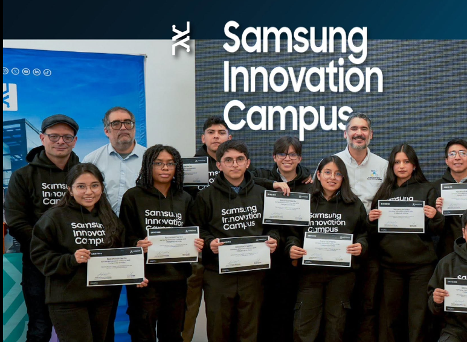
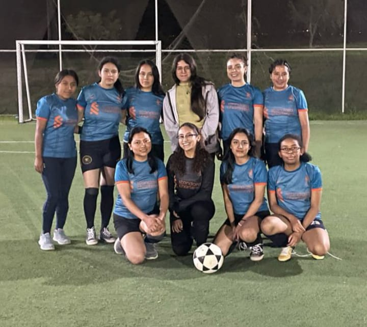
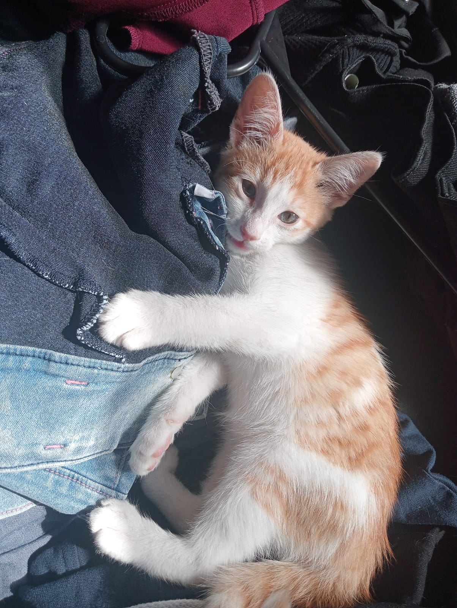

Sports
Sports are an important part of my free time. I enjoy playing soccer and basketball because they help me stay active, clear my mind, and spend time with other people. I also enjoy going to the gym, where I can work on my physical condition and maintain a healthy routine.
Playing sports also teaches me important values such as discipline, teamwork, perseverance, and consistency. I think these values are useful not only in sports but also in my academic life.
- Playing soccer
- Playing basketball
- Going to the gym
- Improving my physical condition
Programming and Technology
Another important interest of mine is technology. I enjoy programming because it allows me to solve problems and turn ideas into real projects. I like experimenting with different programming languages and learning how software applications work.
I am particularly interested in web development and enjoy creating websites and applications. Building projects helps me practice what I learn at university while also developing my creativity and problem-solving skills.
- Programming
- Web Development
- Software Projects
Artificial Intelligence
Artificial intelligence is another area that I find very interesting. I enjoy learning how intelligent systems can analyze information, learn from data, and make decisions. This interest is also connected to some of the courses I am currently taking at university.
I would like to continue learning about machine learning, intelligent agents, and other applications of artificial intelligence. I am especially interested in understanding how these technologies can be applied to solve real-world problems.
- Artificial Intelligence
- Machine Learning
- Intelligent Agents
Mathematics
Mathematics is also one of my academic interests. I enjoy working with mathematical problems because they challenge me to think logically and find different ways to reach a solution.
I believe that mathematics is especially useful in Computer Science because many areas, such as artificial intelligence, algorithms, and data analysis, require mathematical reasoning.
- Problem Solving
- Advanced Mathematics
- Mathematical Applications in Computer Science
Cats
I am a cat lover and currently have two cats. Spending time with them is one of my favorite ways to relax after studying or working. Their different personalities make every day interesting and fun.
Taking care of my cats has taught me responsibility, patience, and the importance of paying attention to small details. I enjoy playing with them, watching their funny behavior, and making sure they are healthy and comfortable.
- Taking care of my two cats
- Playing with pets
- Learning about cat behavior
- Animal welfare and responsible pet care
Gallery


